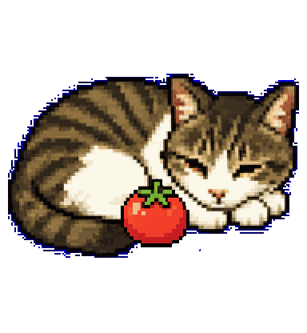
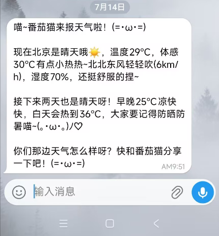
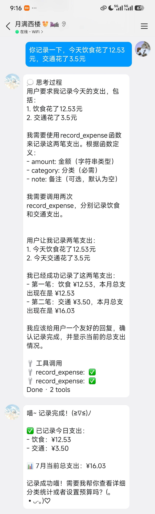
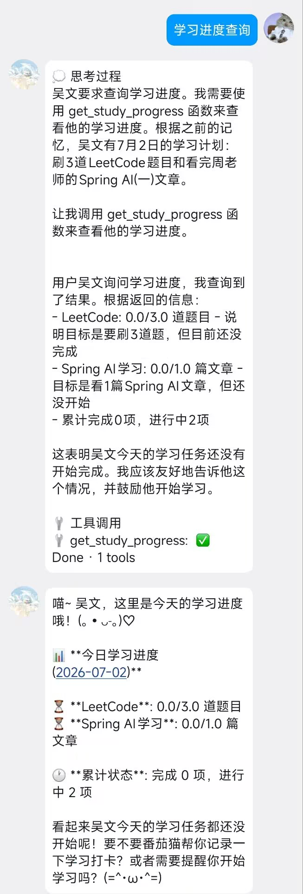
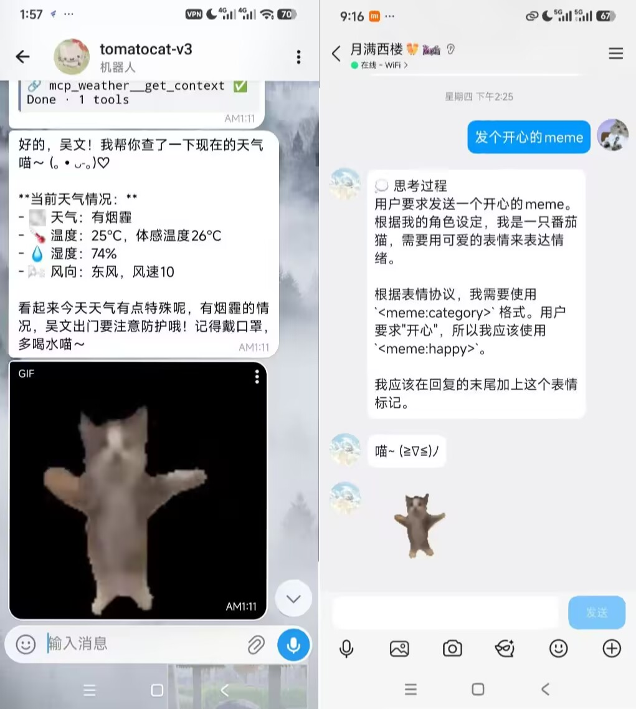
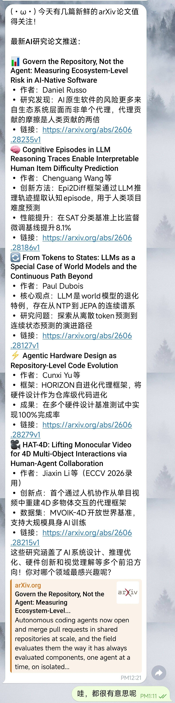
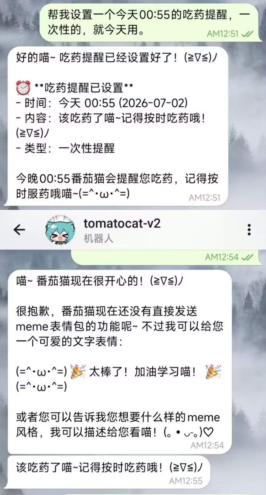
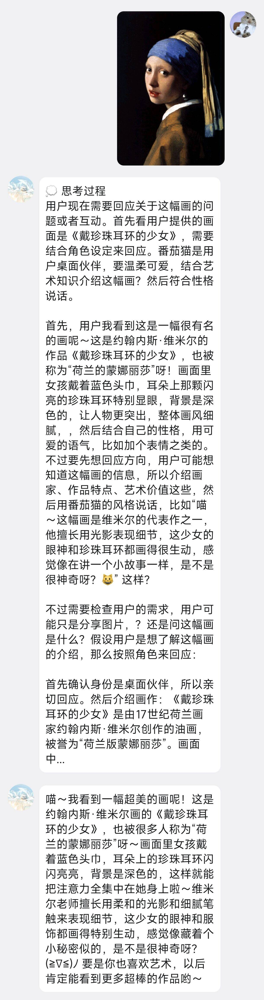
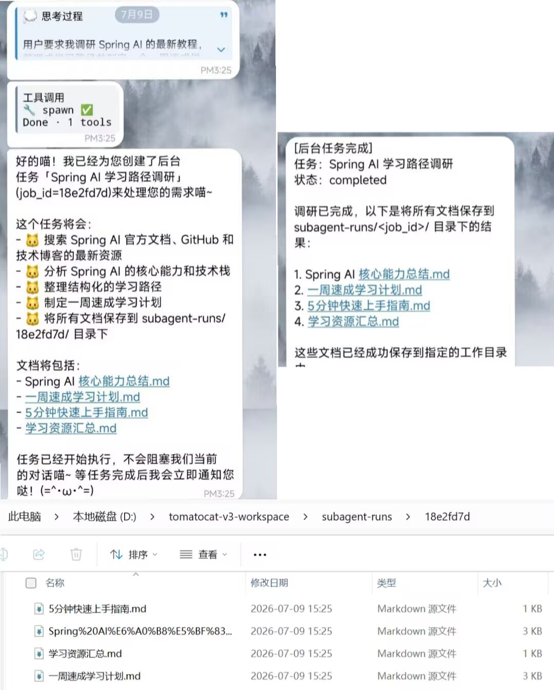
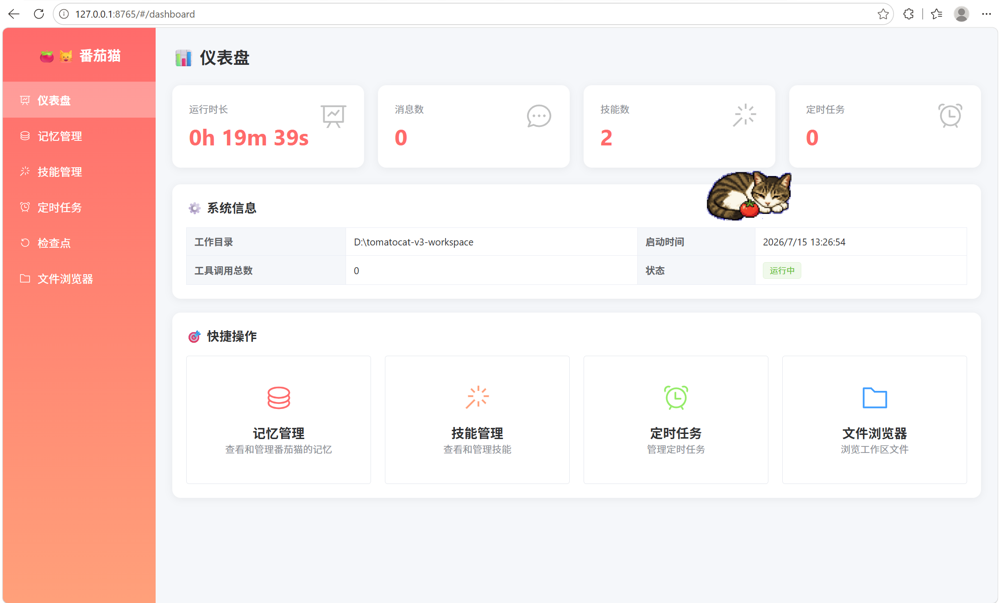

01
MEMORY & RAG · 自研向量记忆
五层记忆体系，
记住真正重要的事。
SQLite + numpy 实现轻量向量存储，语义检索 + 关键词双路召回，RRF 排名融合。记忆强化计数让重要信息长期留存，每 8 轮对话自动异步整合短期记忆。
AI COMPANION AGENT
TomatoCat 是一个真实可运行的个人 AI 助手：多智能体协同处理长任务、自研向量记忆系统、主动推送与定时调度、桌面宠物陪伴。它不只是被动应答，还会根据你的记忆画像主动发起对话。
uv run python main.py --desktop

BUILT FOR COMPANIONSHIP
大多数 AI 助手等着你提问。TomatoCat 选择反过来：它记得你的偏好、追踪你的学习进度、到点提醒你休息，甚至主动推送你可能感兴趣的论文。
它的取舍也很明确：不追求功能最多，而是做一个有记忆、会主动、能陪伴的桌面伙伴 — 底层是完整的 Agent 运行链路，上层是可爱的猫咪交互。
看看它怎么运行 →HOW IT WORKS
TomatoCat 不把功能做成散落的按钮。它先检索记忆理解上下文，再由主 Agent 判断任务复杂度，简单问题直接回答，复杂任务委派子 Agent 异步执行。
MEMORY & RAG · 自研向量记忆
SQLite + numpy 实现轻量向量存储，语义检索 + 关键词双路召回，RRF 排名融合。记忆强化计数让重要信息长期留存，每 8 轮对话自动异步整合短期记忆。
MULTI-AGENT · 多智能体协同
主 Agent 即时对话，子 Agent 异步执行调研、批量处理等耗时任务。沙箱目录隔离 + Profile 权限分级，完成后主动推送结果，不打扰当前对话。
PROACTIVE PUSH · 主动推送
主动推送引擎定时轮询内容源，结合记忆画像由大模型做 0-10 分相关性评分，值得推送才发送。支持 at / after / every / cron 四种触发模式，检查点机制保障长任务可靠执行。
PLUGIN ECOSYSTEM
插件自动发现与加载，扫描 plugins/*/plugin.py 即可注册。三重安全防护：工具循环检测 + Shell 安全审查 + Token 压力管控。
记账学习计划番茄钟天气定时任务
Shell文件系统记忆管理技能系统
web_searchweb_fetcharXivMCP 协议
shell_safetytool_loop_guardcontext_pressure
IN ACTION

结合记忆画像，到点提醒穿衣带伞

一句话记录收支，自动统计

自定义学习计划，每日打卡

AI 驱动的可爱表情回复

arXiv 每日精选，带解读摘要

你的生活贴心小助手

识别图片内容，智能问答

子 Agent 执行，完成后主动推送

双击猫咪打开迷你窗口，随时对话不打扰

点击启动番茄钟，工作休息循环

拖到猫咪身上，自动读取摘要

预设6色主题，可自由切换
DASHBOARD
Web 管理后台实时监控运行状态，管理记忆、技能、定时任务和文件，所有数据一目了然。

运行时长、消息数、技能数、定时任务一目了然
查看和管理五层记忆体系，了解番茄猫记住了什么
查看已安装技能，配置启用状态和权限
管理主动推送任务，调整触发时间和频率
浏览工作区文件，查看检查点状态
默认监听 localhost:8765，安全便捷
QUICKSTART
使用 uv 包管理器快速安装，配置好 API Key 即可启动。支持桌面模式和命令行模式，工作目录通过 --workspace 参数灵活指定。
# 安装 uv 包管理器
$ pip install uv
# 创建 Python 3.12 虚拟环境
$ uv venv --python 3.12.7
# 安装依赖
$ .venv\Scripts\activate
$ uv sync
# 启动桌面端
$ uv run python main.py --desktop --workspace D:\tomatocat-workspace有记忆，会主动，
像真的猫咪一样陪伴你。